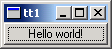
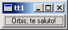
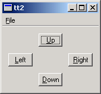
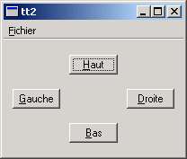
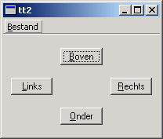
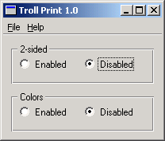
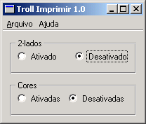
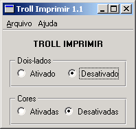
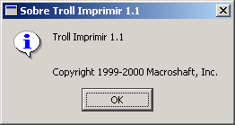
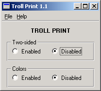

| Home | All Classes | Main Classes | Annotated | Grouped Classes | Functions |
Support for multiple languages is extremely simple in Qt applications, and adds little overhead to the programmer's workload.
Qt minimizes the performance cost of using translations by translating the phrases for each window as they are created. In most applications the main window is created just once. Dialogs are often created once and then shown and hidden as required. Once the initial translation has taken place there is no further runtime overhead for the translated windows. Only those windows that are created, destroyed and subsequently created will have a translation performance cost.
Creating applications that can switch language at runtime is possible with Qt, but requires a certain amount of programmer intervention and will of course incur some runtime performance cost.
Programmers should make their application look for and load the appropriate translation file and mark user-visible text and Ctrl keyboard accelerators as targets for translation.
Each piece of text that requires translating requires context to help the translator identify where in the program the text occurs. In the case of multiple identical texts that require different translations, the translator also requires some information to disambiguate the source texts. Marking text for translation will automatically cause the class name to be used as basic context information. In some cases the programmer may be required to add additional information to help the translator.
Translation files consist of all the user-visible text and Ctrl key accelerators in an application and translations of that text. Translation files are created as follows:
Run lupdate initially to generate the first set of .ts translation source files with all the user-visible text but no translations.
The .ts files are given to the translator who adds translations using Qt Linguist. Qt Linguist takes care of any changed or deleted source text.
Run lupdate to incorporate any new text added to the application. lupdate synchronizes the user-visible text from the application with the translations; it does not destroy any data.
Steps 2 and 3 are repeated as often as necessary.
When a release of the application is needed lrelease is run to read the .ts files and produce the .qm files used by the application at runtime.
For lupdate to work successfully, it must know which translation files to produce. The files are simply listed in the application's .pro Qt project file, for example:
TRANSLATIONS = tt2_fr.ts \
tt2_nl.ts
See the "lupdate" and "lrelease" sections.
int main( int argc, char **argv )
{
QApplication app( argc, argv );
This is how a simple main() function of a Qt application begins.
int main( int argc, char **argv )
{
QApplication app( argc, argv );
QTranslator translator( 0 );
translator.load( "tt1_la", "." );
app.installTranslator( &translator );
For a translation-aware application a translator object is created, a translation is loaded and the translator object installed into the application.
int main( int argc, char **argv )
{
QApplication app( argc, argv );
QTranslator translator( 0 );
translator.load( QString("tt2_") + QTextCodec::locale(), "." );
app.installTranslator( &translator );
In production applications a more flexible approach, for example, loading translations according to locale, might be more appropriate. If the .ts files are all named according to a convention such as appname_locale, e.g. tt2_fr, tt2_de etc, then the code above will load the current locale's translation at runtime.
If there is no translation file for the current locale the application will fall back to using the original source text.
User-visible strings are marked as translation targets by wrapping them in a tr() call, for example:
button = new QPushButton( "&Quit", this );
would become
button = new QPushButton( tr("&Quit"), this);
All QObject subclasses that use the Q_OBJECT macro implement the tr() function.
Although the tr() call is normally made directly since it is usually called as a member function of a QObject subclass, in other cases an explicit class name can be supplied, for example:
QPushButton::tr("&Quit")
or
QObject::tr("&Quit")
The lupdate program automatically provides a context for every source text. This context is the class name of the class that contains the tr() call. This is sufficient in the vast majority of cases. Sometimes however, the translator will need further information to uniquely identify a source text; for example, a dialog that contained two separate frames, each of which contained an "Enabled" option would need each identified because in some languages the translation would differ between the two. This is easily achieved using the two argument form of the tr() call, e.g.
rbc = new QRadioButton( tr("Enabled", "Color frame"), this );
and
rbh = new QRadioButton( tr("Enabled", "Hue frame"), this );
Ctrl key accelerators are also translatable:
file->insertItem( tr("E&xit"), qApp, SLOT(quit()),
tr("Ctrl+Q", "Quit") );
It is strongly recommended that the two argument form of tr() is used for Ctrl key accelerators. The second argument is the only clue the translator has as to the function performed by the accelerator.
In large complex applications it may be difficult for the translator to see where a particular source text comes from. This problem can be solved by adding a comment using the keyword TRANSLATOR which describes the navigation steps to reach the text in question; e.g.
/* TRANSLATOR FindDialog
Choose Edit|Find from the menu bar or press Ctrl+F to pop up the
Find dialog.
*/
These comments are particularly useful for widget classes.
C++ namespaces and the using namespace statement can confuse lupdate. It will interpret MyClass::tr() as meaning just that, not as MyNamespace::MyClass::tr(), even if MyClass is defined in the MyNamespace namespace. Runtime translation of these strings will fail because of that.
You can work around this limitation by putting a TRANSLATOR comment at the beginning of the source files that use MyClass::tr():
/* TRANSLATOR MyNamespace::MyClass */
After the comment, all references to MyClass::tr() will be understood as meaning MyNamespace::MyClass::tr().
If the quoted text is not in a member function of a QObject subclass, use either the tr() function of an appropriate class, or the QApplication::translate() function directly:
void some_global_function( LoginWidget *logwid )
{
QLabel *label = new QLabel(
LoginWidget::tr("Password:"), logwid );
}
void same_global_function( LoginWidget *logwid )
{
QLabel *label = new QLabel(
qApp->translate("LoginWidget", "Password:"),
logwid );
}
If you need to have translatable text completely outside a function, there are two macros to help: QT_TR_NOOP() and QT_TRANSLATE_NOOP(). These macros merely mark the text for extraction by lupdate. The macros expand to just the text (without the context).
Example of QT_TR_NOOP():
QString FriendlyConversation::greeting( int greet_type )
{
static const char* greeting_strings[] = {
QT_TR_NOOP( "Hello" ),
QT_TR_NOOP( "Goodbye" )
};
return tr( greeting_strings[greet_type] );
}
Example of QT_TRANSLATE_NOOP():
static const char* greeting_strings[] = {
QT_TRANSLATE_NOOP( "FriendlyConversation", "Hello" ),
QT_TRANSLATE_NOOP( "FriendlyConversation", "Goodbye" )
};
QString FriendlyConversation::greeting( int greet_type )
{
return tr( greeting_strings[greet_type] );
}
QString global_greeting( int greet_type )
{
return qApp->translate( "FriendlyConversation",
greeting_strings[greet_type] );
}
Three tutorials are presented. The first demonstrates the creation of a QTranslator object. It also shows the simplest use of the tr() function to mark user-visible source text for translation. The second tutorial explains how to make the application load the translation file applicable to the current locale. It also shows the use of the two-argument form of tr() which provides additional information to the translator. The third tutorial explains how identical source texts can be distinguished even when they occur in the same context. This tutorial also discusses how the translation tools help minimize the translator's work when an application is upgraded.

Tutorial 1 Screenshot, English version
TEMPLATE = app CONFIG += qt warn_on SOURCES = main.cpp TRANSLATIONS = tt1_la.ts
tt1.pro
/****************************************************************
**
** Translation tutorial 1
**
****************************************************************/
#include <qapplication.h>
#include <qpushbutton.h>
#include <qtranslator.h>
int main( int argc, char **argv )
{
QApplication app( argc, argv );
QTranslator translator( 0 );
translator.load( "tt1_la", "." );
app.installTranslator( &translator );
QPushButton hello( QPushButton::tr("Hello world!"), 0 );
app.setMainWidget( &hello );
hello.show();
return app.exec();
}
main.cpp
This example is a reworking of the "hello-world" example from Tutorial #1, with a Latin translation. The Tutorial 1 Screenshot, English version, above, shows the English version.
#include <qtranslator.h>
This line includes the definition of the QTranslator class. Objects of this class provide translations for user-visible text.
QTranslator translator( 0 );
Creates a QTranslator object without a parent.
translator.load( "tt1_la", "." );
Tries to load a file called tt1_la.qm (the .qm file extension is implicit) that contains Latin translations for the source texts used in the program. No error will occur if the file is not found.
app.installTranslator( &translator );
Adds the translations from tt1_la.qm to the pool of translations used by the program.
QPushButton hello( QPushButton::tr("Hello world!"), 0 );
Creates a push button that displays "Hello world!". If tt1_la.qm was found and contains a translation for "Hello world!", the translation appears; if not, the source text appears.
All classes that inherit QObject have a tr() function. Inside a member function of a QObject class, we simply write tr("Hello world!") instead of QPushButton::tr("Hello world!") or QObject::tr("Hello world!").
Since we haven't made the translation file tt1_la.qm, the source text is shown when we run the application:
Tutorial 1 Screenshot, English version
The first step is to create a project file, tt1.pro, that lists all the source files for the project. The project file can be a qmake project file, or even an ordinary makefile. Any file that contains
SOURCES = main.cpp
TRANSLATIONS = tt1_la.ts
will work. TRANSLATIONS specifies the message files we want to maintain. In this example, we just maintain one set of translations, namely Latin.
Note that the file extension is .ts, not .qm. The .ts translation source format is designed for use during the application's development. Programmers or release managers run the lupdate program to generate and update .ts files with the source text that is extracted from the source code. Translators read and update the .ts files using Qt Linguist adding and editing their translations.
The .ts format is human-readable XML that can be emailed directly and is easy to put under version control. If you edit this file manually, be aware that the default encoding for XML is UTF-8, not Latin-1 (ISO 8859-1). One way to type in a Latin-1 character such as 'ø' (Norwegian o with slash) is to use an XML entity: "ø". This will work for any Unicode character.
Once the translations are complete the lrelease program is used to convert the .ts files into the .qm Qt message file format. The .qm format is a compact binary format designed to deliver very fast lookup performance. Both lupdate and lrelease read all the project's source and header files (as specified in the HEADERS and SOURCES lines of the project file) and extract the strings that appear in tr() function calls.
lupdate is used to create and update the message files (tt1_la.ts in this case) to keep them in sync with the source code. It is safe to run lupdate at any time, as lupdate does not remove any information. For example, you can put it in the makefile, so the .ts files are updated whenever the source changes.
Try running lupdate right now, like this:
lupdate -verbose tt1.pro
(The -verbose option instructs lupdate to display messages that explain what it is doing.) You should now have a file tt1_la.ts in the current directory, containing this:
<!DOCTYPE TS><TS>
<context>
<name>QPushButton</name>
<message>
<source>Hello world!</source>
<translation type="unfinished"></translation>
</message>
</context>
</TS>
You don't need to understand the file format since it is read and updated using tools (lupdate, Qt Linguist, lrelease).
We will use Qt Linguist to provide the translation, although you can use any XML or plain text editor to enter a translation into a .ts file.
To start Qt Linguist, type
linguist tt1_la.ts
You should now see the text "QPushButton" in the top left pane. Double-click it, then click on "Hello world!" and enter "Orbis, te saluto!" in the Translation pane (the middle right of the window). Don't forget the exclamation mark!
Click the Done checkbox and choose File|Save from the menu bar. The .ts file will no longer contain
<translation type='unfinished'></translation>
but instead will have
<translation>Orbis, te saluto!</translation>
To see the application running in Latin, we have to generate a .qm file from the .ts file. Generating a .qm file can be achieved either from within Qt Linguist (for a single .ts file), or by using the command line program lrelease which will produce one .qm file for each of the .ts files listed in the project file. Generate tt1_la.qm from tt1_la.ts by choosing File|Release from Qt Linguist's menu bar and pressing Save in the file save dialog that pops up. Now run the tt1 example program again. This time the button will be labelled "Orbis, te saluto!".

Tutorial 1 Screenshot, Latin version

Tutorial 2 Screenshot, English version
TEMPLATE = app
CONFIG += qt warn_on
HEADERS = arrowpad.h \
mainwindow.h
SOURCES = arrowpad.cpp \
main.cpp \
mainwindow.cpp
TRANSLATIONS = tt2_fr.ts \
tt2_nl.ts
tt2.pro
This example is a slightly more involved and introduces a key Qt Linguist concept: "contexts".
arrowpad.h contains the definition of ArrowPad, a custom widget;
arrowpad.cpp contains the implementation of ArrowPad;
mainwindow.h contains the definition of MainWindow, a subclass of QMainWindow
mainwindow.cpp contains the implementation of MainWindow;
main.cpp contains main().
We will use two translations, French and Dutch, although there is no effective limit on the number of possible translations that can be used with an application. The relevant lines of tt2.pro are
HEADERS = arrowpad.h \
mainwindow.h
SOURCES = arrowpad.cpp \
main.cpp \
mainwindow.cpp
TRANSLATIONS = tt2_fr.ts \
tt2_nl.ts
Run lupdate; it should produce two identical message files tt2_fr.ts and tt2_nl.ts. These files will contain all the source texts marked for translation with tr() calls and their contexts.
In arrowpad.h we define the ArrowPad subclass which is a subclass of QWidget. In the Tutorial 2 Screenshot, English version, above, the central widget with the four buttons is an ArrowPad.
class ArrowPad : public QGrid
When lupdate is run it not only extracts the source texts but it also groups them into contexts. A context is the name of the class in which the source text appears. Thus, in this example, "ArrowPad" is a context: it is the context of the texts in the ArrowPad class. The Q_OBJECT macro defines tr(x) in ArrowPad like this
qApp->translate( "ArrowPad", x )
Knowing which class each source text appears in enables Qt Linguist to group texts that are logically related together, e.g. all the text in a dialog will have the context of the dialog's class name and will be shown together. This provides useful information for the translator since the context in which text appears may influence how it should be translated. For some translations keyboard accelerators may need to be changed and having all the source texts in a particular context (class) grouped together makes it easier for the translator to perform any accelerator changes without introducing conflicts.
In arrowpad.cpp we implement the ArrowPad class.
(void) new QPushButton( tr("&Up"), this );
We call ArrowPad::tr() for each button's label since the labels are user-visible text.
Tutorial 2 Screenshot, English version
class MainWindow : public QMainWindow
{
Q_OBJECT
In the Tutorial 2 Screenshot, English version, above, the whole window is a MainWindow. This is defined in the mainwindow.h header file. Here too, we use Q_OBJECT, so that MainWindow will become a context in Qt Linguist.
In the implementation of MainWindow, mainwindow.cpp, we create an instance of our ArrowPad class
ArrowPad *ap = new ArrowPad( this, "arrow pad" );
We also call MainWindow::tr() twice, once for the menu item and once for the accelerator.
file->insertItem( tr("E&xit"), qApp, SLOT(quit()),
tr("Ctrl+Q", "Quit") );
Note the use of tr() to support different keys in other languages. "Ctrl+Q" is a good choice for Quit in English, but a Dutch translator might want to use "Ctrl+A" (for Afsluiten) and a German translator "Strg+E" (for Beenden). When using tr() for Ctrl key accelerators, the two argument form should be used with the second argument describing the function that the accelerator performs.
Our main() function is defined in main.cpp as usual.
QTranslator translator( 0 );
translator.load( QString("tt2_") + QTextCodec::locale(), "." );
app.installTranslator( &translator );
We choose which translation to use according to the current locale. QTextCodec::locale() can be influenced by setting the LANG environment variable, for example. Notice that the use of a naming convention that incorporates the locale for .qm message files, (and .ts files), makes it easy to implement choosing the translation file according to locale.
If there is no .qm message file for the locale chosen the original source text will be used and no error raised.
We'll begin by translating the example application into French. Start Qt Linguist with tt2_fr.ts. You should get the seven source texts ("&Up", "&Left", etc.) grouped in two contexts ("ArrowPad" and "MainWindow").
Now, enter the following translations:
ArrowPad
&Up - &Haut
&Left - &Gauche
&Right - &Droite
&Down - &Bas
MainWindow
E&xit - &Quitter
Ctrl+Q - Ctrl+Q
&File - &Fichier
It's quickest to press Alt+D (which clicks the Done & Next button) after typing each translation, since this marks the translation as done and moves on to the next source text.
Save the file and do the same for Dutch working with tt2_nl.ts:
ArrowPad
&Up - &Boven
&Left - &Links
&Right - &Rechts
&Down - &Onder
MainWindow
E&xit - &Afsluiten
Ctrl+Q - Ctrl+A
File - &Bestand
We have to convert the tt1_fr.ts and tt1_nl.ts translation source files into .qm files. We could use Qt Linguist as we've done before; however using the command line tool lrelease ensures that all the .qm files for the application are created without us having to remember to load and File|Release each one individually from Qt Linguist.
In practice we would include calls to lupdate and lrelease in the application's makefile to ensure that the latest translations are used.
Type
lrelease tt2.pro
This should create both tt2_fr.qm and tt2_nl.qm. Set the LANG environment variable to fr. In Unix, one of the two following commands should work
export LANG=fr
setenv LANG fr
In Windows, either modify autoexec.bat or run
set LANG=fr
When you run the program, you should now see the French version:

Tutorial 2 Screenshot, French version
Try the same with Dutch, by setting LANG=nl. Now the Dutch version should appear:

Tutorial 2 Screenshot, Dutch version
Mark one of the translations in Qt Linguist as not done, i.e. by unchecking the "done" checkbox; run lupdate, then lrelease, then the example. What effect did this change have?
Set LANG=fr_CA (French Canada) and run the example program again. Explain why the result is the same as with LANG=fr.
Change one of the accelerators in the Dutch translation to eliminate the conflict between &Bestand and &Boven.

Tutorial 3 Screenshot, "Troll Print 1.0", English version
TEMPLATE = app
CONFIG += qt warn_on
HEADERS = mainwindow.h \
printpanel.h
SOURCES = main.cpp \
mainwindow.cpp \
printpanel.cpp
TRANSLATIONS = tt3_pt.ts
tt3.pro
We've included a translation file, tt3_pt.ts, which contains some Portuguese translations for this example.
We will consider two releases of the same application: Troll Print 1.0 and 1.1. We will learn to reuse the translations created for one release in a subsequent release. (In this tutorial, you need to edit some source files. It's probably best to copy all the files to a new temporary directory and work from there.)
Troll Print is a toy example application that lets the user choose printer settings. It comes in two versions: English and Portuguese.
Version 1.0 consists of these files:
printpanel.h contains the definition of PrintPanel;
printpanel.cpp contains the implementation of PrintPanel;
mainwindow.h contains the definition of MainWindow;
mainwindow.cpp contains the implementation of MainWindow;
main.cpp contains main();
tt3.pro is the qmake project file.
tt3_pt.ts is the Portuguese message file.
The PrintPanel is defined in printpanel.h.
class PrintPanel : public QVBox
{
Q_OBJECT
PrintPanel is a QWidget. It needs the Q_OBJECT macro for tr() to work properly.
The implementation file is printpanel.cpp.
/*
QLabel *lab = new QLabel( tr("<b>TROLL PRINT</b>"), this );
lab->setAlignment( AlignCenter );
*/
Some of the code is commented out in Troll Print 1.0; you will uncomment it later, for Troll Print 1.1.
QHButtonGroup *twoSided = new QHButtonGroup( this );
twoSided->setTitle( tr("2-sided") );
but = new QRadioButton( tr("Enabled"), twoSided );
but = new QRadioButton( tr("Disabled"), twoSided );
but->toggle();
QHButtonGroup *colors = new QHButtonGroup( this );
colors->setTitle( tr("Colors") );
but = new QRadioButton( tr("Enabled"), colors );
but = new QRadioButton( tr("Disabled"), colors );
but->toggle();
Notice the two occurrences of tr("Enabled") and of tr("Disabled") in PrintPanel. Since both "Enabled"s and "Disabled"s appear in the same context Qt Linguist will only display one occurrence of each and will use the same translations for the duplicates that it doesn't display. Whilst this is a useful timesaver, in some languages, such as Portuguese, the second occurrence requires a separate translation. We will see how Qt Linguist can be made to display all the occurrences for separate translation shortly.
The header file for MainWindow, mainwindow.h, contains no surprises. In the implementation, mainwindow.cpp, we have some user-visible source texts that must be marked for translation.
setCaption( tr("Troll Print 1.0") );
We must translate the window's caption.
file->insertItem( tr("E&xit"), qApp, SLOT(quit()),
tr("Ctrl+Q", "Quit") );
QPopupMenu *help = new QPopupMenu( this );
help->insertItem( tr("&About"), this, SLOT(about()), Key_F1 );
help->insertItem( tr("About &Qt"), this, SLOT(aboutQt()) );
menuBar()->insertItem( tr("&File"), file );
menuBar()->insertSeparator();
menuBar()->insertItem( tr("&Help"), help );
We also need to translate the menu items. Note that the two argument form of tr() is used for the keyboard accelerator, "Ctrl+Q", since the second argument is the only clue the translator has to indicate what function that accelerator will perform.
QTranslator translator( 0 );
translator.load( QString("tt3_") + QTextCodec::locale(), "." );
app.installTranslator( &translator );
The main() function in main.cpp is the same as the one in Tutorial 2. In particular it chooses a translation file based on the current locale.
We will use the translations in the tt3_pt.ts file that is provided.
Set the LANG environment variable to pt, and then run tt3. You should still see the English version, as shown in the Tutorial 3 Screenshot, "Troll Print 1.0", English version, above. Now run lrelease, e.g. lrelease tt3.pro, and then run the example again. Now you should see the Portuguese edition (Troll Imprimir 1.0):
Tutorial 3 Screenshot, "Troll Imprimir 1.0", (Bad) Portuguese version
Whilst the translation has appeared correctly, it is in fact wrong. In good Portuguese, the second occurrence of "Enabled" should be "Ativadas", not "Ativado" and the ending for the second translation of "Disabled" must change similarly too.
If you open tt3_pt.ts using Qt Linguist, you will see that there is just one occurrence of "Enabled" and of "Disabled" in the translation source file, even though there are two of each in the source code. This is because Qt Linguist tries to minimize the translator's work by using the same translation for duplicate source texts. In cases such as this where an identical translation is wrong, the programmer must disambiguate the duplicate occurrences. This is easily achieved by using the two argument form of tr().
We can easily determine which file must be changed because the translator's "context" is in fact the class name for the class where the texts that must be changed appears. In this case the file is printpanel.cpp, where the there are four lines to change. Add the second argument "two-sided" in the appropriate tr() calls to the first pair of radio buttons:
but = new QRadioButton( tr("Enabled", "two-sided"), twoSided );
but = new QRadioButton( tr("Disabled", "two-sided"), twoSided );
and add the second argument "colors" in the appropriate tr() calls for the second pair of radio buttons:
but = new QRadioButton( tr("Enabled", "colors"), colors );
but = new QRadioButton( tr("Disabled", "colors"), colors );
Now run lupdate and open tt3_pt.ts with Qt Linguist. You should now see two changes.
First, the translation source file now contains three "Enabled", "Disabled" pairs. The first pair is marked "(obs.)" signifying that they are obsolete. This is because these texts appeared in tr() calls that have been replaced by new calls with two arguments. The second pair has "two-sided" as their comment, and the third pair has "colors" as their comment. The comments are shown in the Source text and comments area in Qt Linguist.
Second, the translation text "Ativado" and "Desativado" have been automatically used as translations for the new "Enabled" and "Disabled" texts, again to minimize the translator's work. Of course in this case these are not correct for the second occurrence of each word, but they provide a good starting point.
Change the second "Ativado" into "Ativadas" and the second "Desativado" into "Desativadas", then save and quit. Run lrelease to obtain an up-to-date binary tt3_pt.qm file, and run Troll Print (or rather Troll Imprimir).

Tutorial 3 Screenshot, "Troll Imprimir 1.0", (Good) Portuguese version
The second argument to tr() calls, called "comments" in Qt Linguist, distinguish between identical source texts that occur in the same context (class). They are also useful in other cases to give clues to the translator, and in the case of Ctrl key accelerators are the only means of conveying the function performed by the accelerator to the translator.
An additional way of helping the translator is to provide information on how to navigate to the particular part of the application that contains the source texts they must translate. This helps them see the context in which the translation appears and also helps them to find and test the translations. This can be achieved by using a TRANSLATOR comment in the source code:
/* TRANSLATOR MainWindow
In this application the whole application is a MainWindow.
Choose Help|About from the menu bar to see some text
belonging to MainWindow.
*/
Try adding these comments to some source files, particularly to dialog classes, describing the navigation necessary to reach the dialogs. You could also add them to the example files, e.g. mainwindow.cpp and printpanel.cpp are appropriate files. Run lupdate and then start Qt Linguist and load in tt3_pt.ts. You should see the comments in the Source text and comments area as you browse through the list of source texts.
Sometimes, particularly with large programs, it can be difficult for the translator to find their translations and check that they're correct. Comments that provide good navigation information can save them time:
/* TRANSLATOR ZClientErrorDialog
Choose Client|Edit to reach the Client Edit dialog, then choose
Client Specification from the drop down list at the top and pick
client Bartel Leendert van der Waerden. Now check the Profile
checkbox and then click the Start Processing button. You should
now see a pop up window with the text "Error: Name too long!".
This window is a ZClientErrorDialog.
*/
We'll now prepare release 1.1 of Troll Print. Start your favorite text editor and follow these steps:
Uncomment the two lines that create a QLabel with the text "<b>TROLL PRINT</b>" in printpanel.cpp.
Word-tidying: Replace "2-sided" by "Two-sided" in printpanel.cpp.
Replace "1.0" with "1.1" everywhere it occurs in mainwindow.cpp.
Update the copyright year to 1999-2000 in mainwindow.cpp.
(Of course the version number and copyright year would be consts or #defines in a real application.)
Once finished, run lupdate, then open tt3_pt.ts in Qt Linguist. The following items are of special interest:
MainWindow
Troll Print 1.0 - marked "(obs.)", obsolete
About Troll Print 1.0 - marked "(obs.)", obsolete
Troll Print 1.0. Copyright 1999 Macroshaft, Inc. - marked "(obs.)", obsolete
Troll Print 1.1 - automatically translated as "Troll Imprimir 1.1"
About Troll Print 1.1 - automatically translated as "Troll Imprimir 1.1"
Troll Print 1.1. Copyright 1999-2000 Macroshaft, Inc. - automatically translated as "Troll Imprimir 1.1. Copyright 1999-2000 Macroshaft, Inc."
PrintPanel
2-sided - marked "(obs.)", obsolete
<b>TROLL PRINT</b> - unmarked, i.e. untranslated
Two-sided - unmarked, i.e. untranslated.
Notice that lupdate works hard behind the scenes to make revisions easier, and it's pretty smart with numbers.
Go over the translations in MainWindow and mark these as "done". Translate "<b>TROLL PRINT</b>" as "<b>TROLL IMPRIMIR</b>". When you're translating "Two-sided", press the Guess Again button to translate "Two-sided", but change the "2" into "Dois".
Save and quit, then run lrelease. The Portuguese version should look like this:

Tutorial 3 Screenshot, "Troll Imprimir 1.1", Portuguese version
Choose Ajuda|Sobre, (Help|About), to see the about box

Tutorial 3 Screenshot, About box, Portuguese version
If you choose Ajuda|Sobre Qt, (Help|About Qt), you'll get an English dialog. Oops! Qt itself needs to be translated. See the document Internationalization with Qt for details.
Now set LANG=en to get the original English version:

Tutorial 3 Screenshot, "Troll Print 1.1", English version
These tutorials cover all that you need to know to prepare your Qt applications for translation.
At the beginning of a project add the translation source files to be used to the project file and add calls to lupdate and lrelease to the make file.
During the project all the programmer must do is wrap any user-visible text in tr() calls. They should also use the two argument form for Ctrl key accelerators, or when asked by the translator for the cases where the same text translates into two different forms in the same context. The programmer should also include TRANSLATION comments to help the translator navigate the application.
| Copyright © 2007 Trolltech | Trademarks | Qt 3.3.8
|